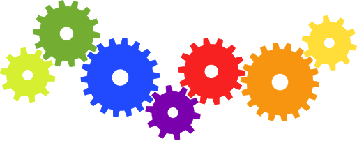

Spatial Data Analysis with R
BayGeo, Spring 2020
Automation with Branches and Loops

Branching with if, else, and ifelse
if and else statements are control structures that let you control how a code should execute based on a set of pre-established conditions.
Syntax:
if (condition) {statement} else {other statement}
## [1] "NOT BIG ENOUGH!!"
- the conditional expression after the
if statement much be in (parentheses)
- Use {curly braces} to define chunks of code
- indentation is not mandatory, but makes the code more legible
Chaining multiple tests with ‘and’ and ‘or’
You can chain together expressions that test for multiple conditions using operators for and and or.
Note however R doesn’t use the keywords and and or. Rather use || for ‘or’, and && for ‘and’.
## [1] "TRUE"
## [1] "FALSE"
if - else if - else
You can string together multiple ‘else if’ checks.
## [1] 3
## [1] "You picked a multiple of 3"
The ifelse() function
A variation of the if-else statement is the ifelse() function. This function is handy for recoding data.
Syntax:
ifelse(*condition*, *value-if-true*, *value-if-false*)
Code Loops
- Loops are fundamental to automation
- Use a for loop if you know in advance how many passes
- use a while loop if you have to do a check to see if you need to continue going through the loop

For loops
Generic syntax of a for loop:
You generally loop a variable like i over a vector of values to control the loop:
## [1] 1
## [1] 4
## [1] 9
## [1] 16
## [1] 25
Often the loop variable is used as an index:
## [1] "Alabama"
## [1] "Alaska"
## [1] "Arizona"
## [1] "Arkansas"
## [1] "California"
Loops can be combined with if-else statements:
## [1] "NOT BIG ENOUGH!!"
## [1] "NOT BIG ENOUGH!!"
## [1] "NOT BIG ENOUGH!!"
## [1] "NOT BIG ENOUGH!!"
## [1] "NOT BIG ENOUGH!!"
## [1] "NOT BIG ENOUGH!!"
## [1] 7
## [1] 8
## [1] 9
## [1] 10
While Loops
The generic form of a while loop is:
It’s really important that some_condition will eventually be FALSE, otherwise the loop will run forever!
## [1] 0.94
break
Another way to escape out of a loop is the break statement:
(Better) Alternatives to Loops
Many R functions are vectorized, so often you don’t actually need a code loop.
See also Loops Tutorial from DataCamp
Example: add a random offset to each element of sequence
## num num_plus_offset
## 1 1 1.064801
## 2 2 1.477202
## 3 3 3.018701
## 4 4 3.955935
## 5 5 4.792191
In addition to for and while loops, R has functions like sapply() and lapply() that will apply a function to each element of a vector/list.
sapply() and lapply() are generally usually faster than traditional loops.
Next: Raster Pt I. Importing and Plotting Raster Data